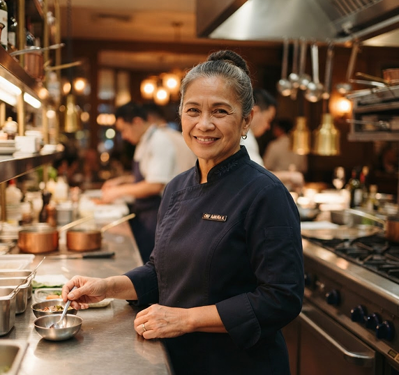

MEET TITA MARIZ
Cooking the way family taught her.
Tita Mariz learned to cook standing on a stool beside her mother, stirring pots of adobo on Sunday mornings. Every recipe came with a story, and most were never written down.
Kusina ni Tita Mariz brings those Sunday lunches to Makati. We cook slowly, season generously, and serve every dish the way we would at home: with a second helping on the way.